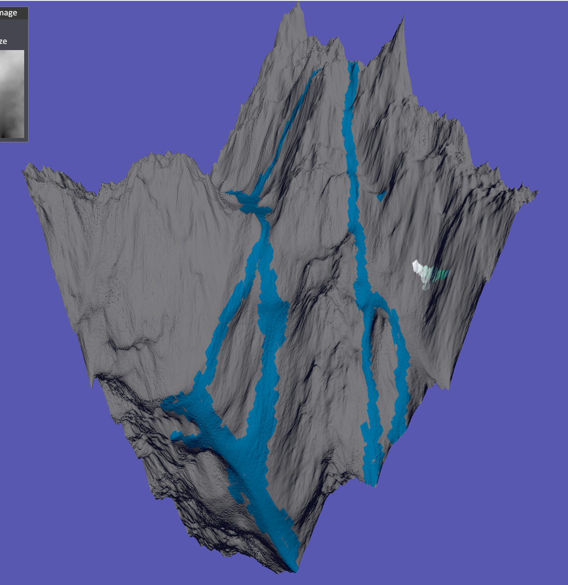
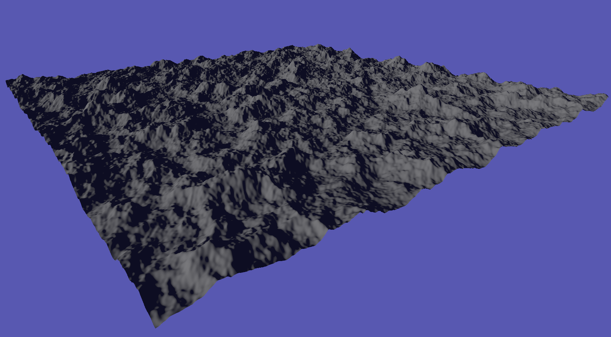

To participate you will need to do the following instructions on a computer.
Any questions can be directed to my email at cameron.dawes9@gmail.com and I will respond ASAP.
Please read the information sheet and then continue on.
Download the program files off of the Github or as a zip file from OneDrive.
After downloading it run the program and use the tool to complete the tasks below. Just make sure if you have two displays, open it on the main display.
Task 1, Generate a diamond square terrain,
Use hydraulic erosion to erode it,
Use the smooth brush to smooth the terrain as hyrdraulic erosion is quite bumpy (you can use a high brush size),
Then colour in what you would like to be a river,
Finally export it as a ply file and then load the file you just saved back into the tool.
Below is an example image of what your task 1 could look like.
Task 2, Generate a noise terrain that is reasonably mountainous,
Then use hydraulic erosion once more,
Followed by that use the raise brush to connect some of the mountains and use the lower brush to create some valleys,
Save this as a height map and reload the height map back into the tool and adjust it with the height slider to look as close to the original terrain as possible.
The image below is an example of what the task 2 terrain could look like before hydraulic erosion.
For features it currently has:
Terrain Generation with the Diamond Square algorithm
Terrain Generation with noise and with control such as noise octaves
Hydraulic Erosion with controls
Export terrain model as a .ply file
Export height map of terrain as .png file
Import height map to be used for terrain
Import ply files(currently only ones made by the tool itself)
Brushes to adjust terrain
Wireframe view
After using the tool fill out the questionnaire.
All done! Thank you for participating in round 3. If you would like to share this with colleagues and friends that would help a lot.
After some time I will send out the questionnaire again to get feedback on added features and improvements.